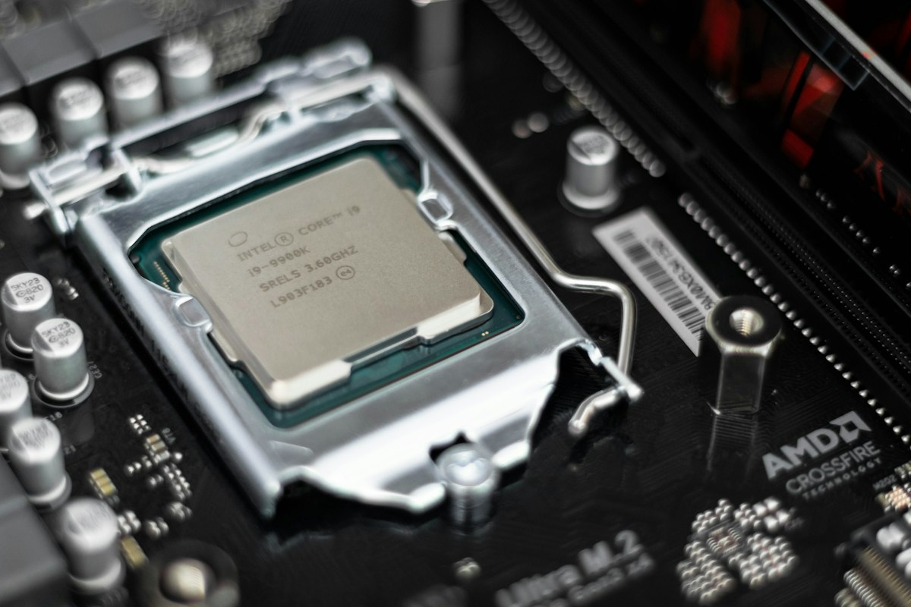
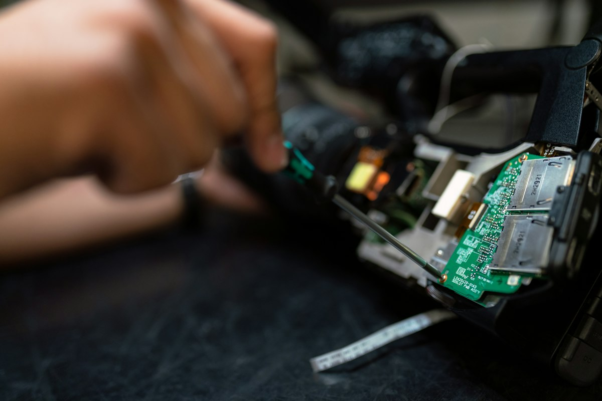

BARU
Laptop Baru
Pilihan laptop baru untuk kerja, kuliah, desain, dan gaming sesuai budget.
- Berbagai merek & spesifikasi
- Garansi resmi
- Konsultasi sebelum membeli
Cari laptop baru, second berkualitas, atau butuh servis? Ceritakan kebutuhan dan budget Anda. Kami bantu pilih unit yang tepat, jelaskan kondisi barang apa adanya, dan tangani servis dengan transparan.
Kami percaya membeli laptop dan merawatnya harus dimulai dari memahami kebutuhan, menjelaskan kondisi barang apa adanya, dan memberi estimasi servis sebelum dikerjakan.
Dari mahasiswa, pekerja, sampai pemilik usaha — kami bantu pilih laptop yang sesuai budget, bukan sekadar yang paling mahal.
Konsultasikan kebutuhan laptop Anda ↗Ceritakan pekerjaan, aplikasi, dan budget Anda.
Spesifikasi, kondisi unit, dan estimasi biaya servis.
Servis dan upgrade sesuai persetujuan Anda.
Stok berganti setiap saat. Tanyakan unit yang tersedia, spesifikasi lengkap, dan harga terbaru melalui WhatsApp.
Pilihan laptop baru untuk kerja, kuliah, desain, dan gaming sesuai budget.
 SECOND
SECONDUnit bekas terpilih yang sudah melalui pengecekan fungsi dan kondisi.

UPGRADETingkatkan performa laptop agar lebih ringan dan cepat tanpa ganti unit.
 SPAREPART
SPAREPARTLCD, keyboard, baterai, charger, sampai aksesoris pendukung harian.
Harga, stok, dan ketentuan garansi dikonfirmasi langsung oleh admin melalui WhatsApp.
Setiap servis diawali pemeriksaan dan estimasi biaya. Pengerjaan dilakukan setelah Anda menyetujui hasil pengecekan.
Bersihkan debu, ganti thermal paste, dan cek kipas agar laptop tidak mudah panas.
Tanyakan layanan ↗Penggantian layar, keyboard, engsel, dan part lain yang sudah tidak nyaman dipakai.
Tanyakan layanan ↗Analisa kerusakan komponen dan jalur daya untuk laptop yang mati total atau sulit menyala.
Tanyakan layanan ↗Instalasi ulang sistem operasi, driver, dan aplikasi kerja sesuai kebutuhan Anda.
Tanyakan layanan ↗Layanan lain yang tersedia: ganti baterai, upgrade RAM/SSD, recovery data, dan perawatan berkala. Kebutuhan pengerjaan dikonfirmasi setelah pemeriksaan.
Meja kerja kami dipakai untuk pengecekan unit, upgrade komponen, dan servis harian. Galeri ini akan terus diperbarui dengan dokumentasi asli kegiatan toko.
Konsultasi dengan teknisi ↗
Isi formulir singkat di bawah. WhatsApp akan terbuka dengan pesan yang sudah disiapkan agar Anda tinggal memeriksa dan mengirimkannya.
Sampaikan kebutuhan, budget, atau keluhan laptop yang dialami. Kami akan menerima pesan Anda melalui WhatsApp.
Pesan dikirim setelah Anda menekan tombol kirim di WhatsApp.
Hubungi kami untuk informasi lokasi toko dan jam operasional terbaru.